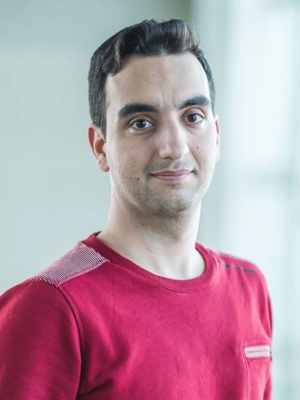

|  | Assistant Professor Contact Address: E-mail: shafiee@cornell.edu |
I am an assistant professor in the School of Operations Research and Information Engineering at Cornell University. Before that, I held positions as a postdoctoral researcher at both the Tepper School of Business at Carnegie Mellon University and the Automatic Control Laboratory at ETH Zurich. I hold a B.Sc. and M.Sc. degree in Electrical Engineering from the University of Tehran and a Ph.D. degree in Management of Technology from École Polytechnique Fédérale de Lausanne.
My primary research interests revolve around optimization under uncertainty, low-complexity decision-making and optimal transport. Most of my works fall into one of the following categories:
Designing new models and algorithms based on (distributionally) robust optimization
Statistical and computational complexity analyses of data-driven optimization problems
Structured nonconvex optimization with application in machine learning and finance
Swiss National Science Foundation Early PostDoc Mobility Fellowship, 2020
A Robust Optimization Approach to Network Control Using Local Information Exchange
with G. Darivianakis, A. Georghiou, J. Lygeros
Operations Research (in press)
Constrained Optimization of Rank-One Functions with Indicator Variables
with F. Kılınç-Karzan
Mathematical Programming, 2024
Conic Mixed-Binary Sets: Convex Hull Characterizations and Applications
with F. Kılınç-Karzan, S. Küçükyavuz, D. Lee
Operations Research, 2023
Discrete Optimal Transport with Independent Marginals is #P-Hard
with B. Taşkesen and D. Kuhn and K. Natarajan
SIAM Journal on Optimization, 2023
Semi-Discrete Optimal Transport: Hardness, Regularization and Numerical Solution
with B. Taşkesen and D. Kuhn
Mathematical Programming, 2022
Winner of the 2022 INFORMS Optimization Society Student Paper Prize
Runner-up for the 2022 best student paper prize of the joint European Conference on Stochastic Optimization and the Computational Management Science Conference (ESCO-CMS)
Bridging Bayesian and Minimax Mean Square Error Estimation via Wasserstein Distributionally Robust Optimization
with V. A. Nguyen, D. Kuhn, P. Mohajerin Esfahani
Mathematics of Operations Research, 2021
Wasserstein Distributionally Robust Optimization: Theory and Applications in Machine Learning
with D. Kuhn, P. Mohajerin Esfahani, and V. A. Nguyen
INFORMS TutORials in Operations Research, 2019
Regularization via Mass Transportation
with D. Kuhn, and P. Mohajerin Esfahani
Journal of Machine Learning Research, 2019
Data-driven Inverse Optimization with Imperfect Information
with P. Mohajerin Esfahani, G. A. Hanasusanto, D. Kuhn
Mathematical Programming, 2018
Evolving Takagi-Sugeno Model Based on Online Gustafson-Kessel Algorithm and Kernel Recursive Least Square Method
with A. Kalhor
Evolving Systems, 2016
Piecewise Linear Spine for Speed-Energy Efficiency Trade-off in Quadruped Robots
with M. Khoramshahi, H. Jalaly Bidgoly, A. Asaei, A. J. Ijspeert, M. Nili Ahmadabad
Robotics and Autonomous Systems, 2013
Robust Distribution Learning with Local and Global Adversarial Corruptions
with S. Nietert, Z. Goldfeld
Conference on Learning Theory (COLT), Edmonton, 2024
Outlier-Robust Wasserstein DRO
with S. Nietert, Z. Goldfeld
Advances in Neural Information Processing Systems (NeurIPS), New Orleans, 2023
Calculating Optimistic Likelihoods Using (Geodesically) Convex Optimization
with V. A. Nguyen, M.-C. Yue, D. Kuhn, W. Wiesemann
Advances in Neural Information Processing Systems (NeurIPS), Vancouver, 2019
Optimistic Distributionally Robust Optimization for Nonparametric Likelihood Approximation
with V. A. Nguyen, M.-C. Yue, D. Kuhn, W. Wiesemann
Advances in Neural Information Processing Systems (NeurIPS), Vancouver, 2019
Wasserstein Distributionally Robust Kalman Filtering
with V. A. Nguyen, D. Kuhn, P. Mohajerin Esfahani
(spotlight) Advances in Neural Information Processing Systems (NeurIPS), Montreal, 2018
Distributionally Robust Logistic Regression
with P. Mohajerin Esfahani, D. Kuhn
(spotlight) Advances in Neural Information Processing Systems (NeurIPS), Montreal, 2015
Mean-Covariance Robust Risk Measurement
with V. A. Nguyen, D. Kuhn, D. Filipović
Major Revision in Management Science
New Perspectives on Regularization and Computation in Optimal Transport-Based Distributionally Robust Optimization
with L. Aolaritei, F. Dörfler, D. Kuhn
Major Revision in Operations Research
The Performance of Wasserstein Distributionally Robust M-Estimators in High Dimensions
with L. Aolaritei and F. Dörfler
Under Review
Reviewer for Journals: Mathematical Programming, Operations Research, Management Science, Mathematics of Operations Research, SIAM Journal on Optimization, Journal of Machine Learning Research, SIAM Journal on Mathematics of Data Science, Machine Learning, IEEE Transactions on Pattern Analysis and Machine Intelligence, IEEE Transactions on Automatic Control, Operations Research Letters, INFORMS Journal on Optimization, European Journal of Operational Research.
Reviewer for Conferences: ICML (2019, 2021), NeurIPS (2019, 2020, 2021), AAAI (2020).
ICCOPT 2022 Summer School on Distributionally Robust Optimization: Slides are available here.